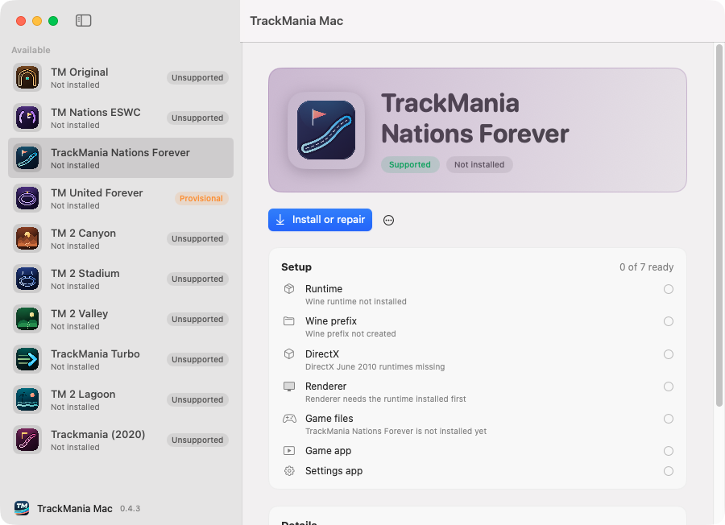
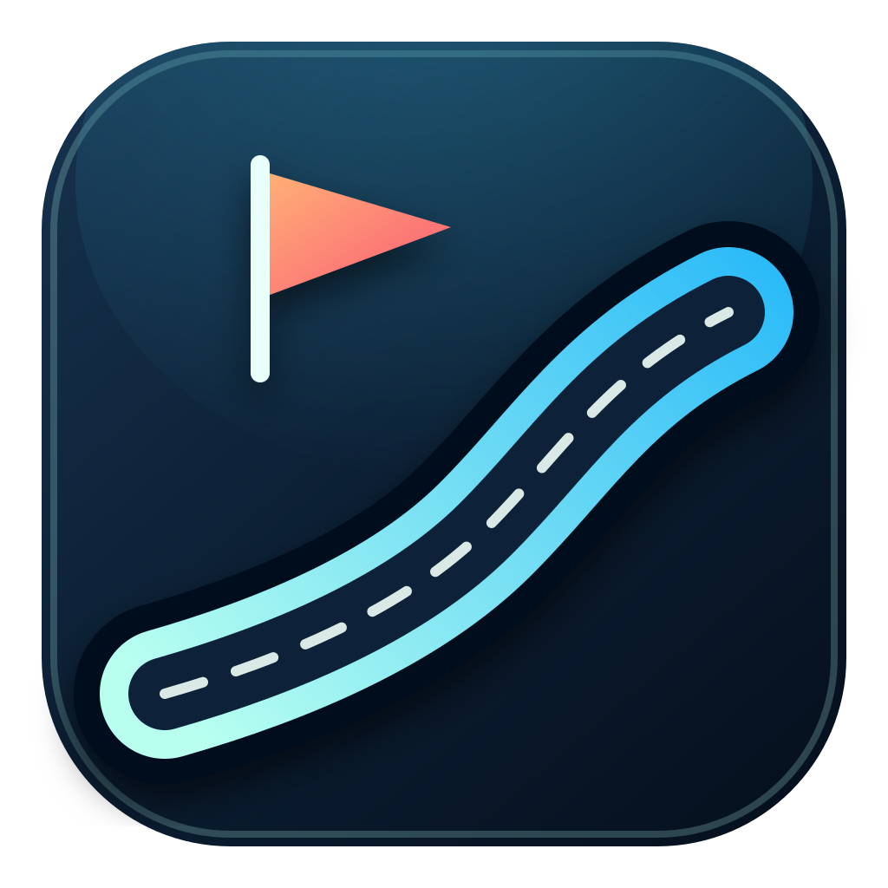
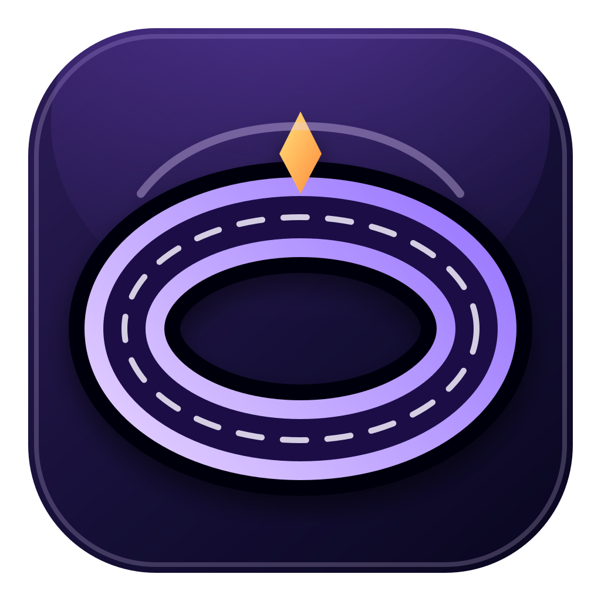
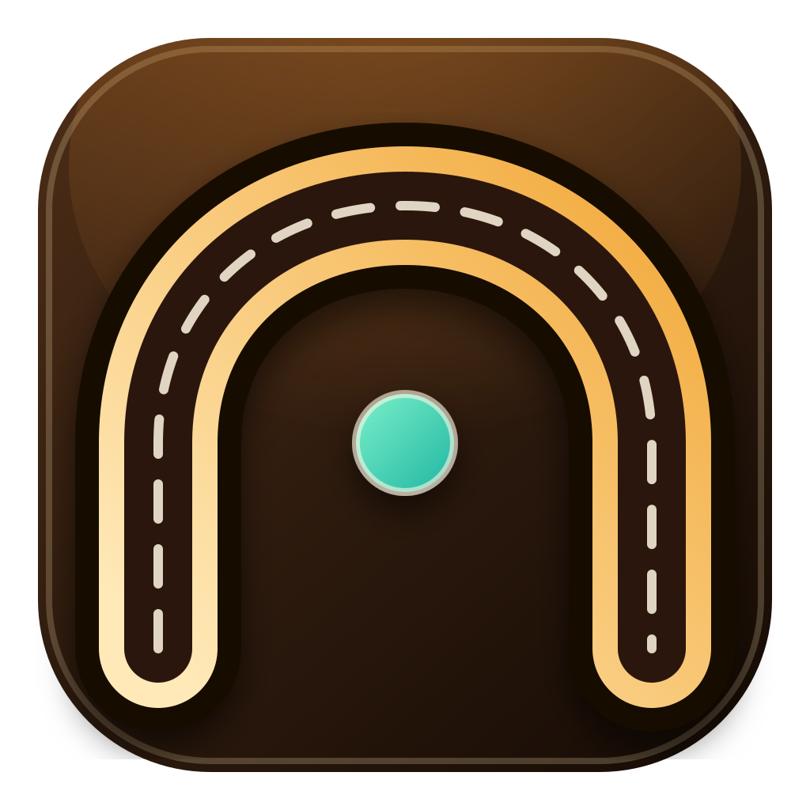
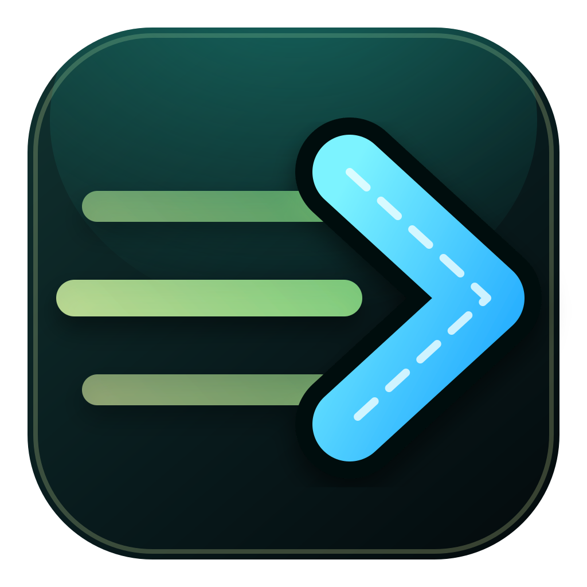
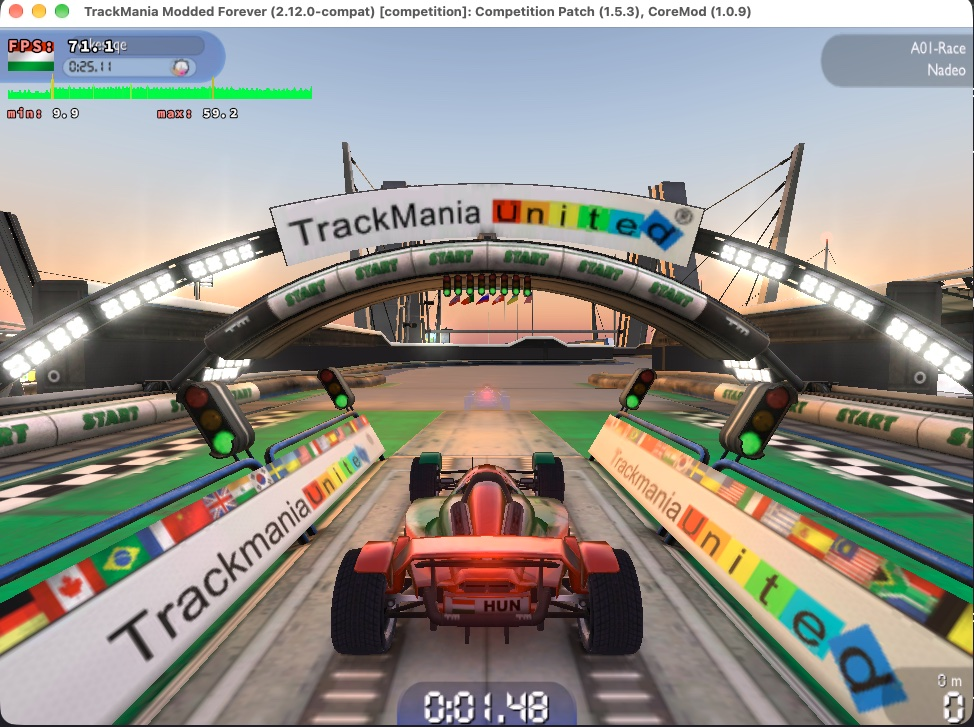
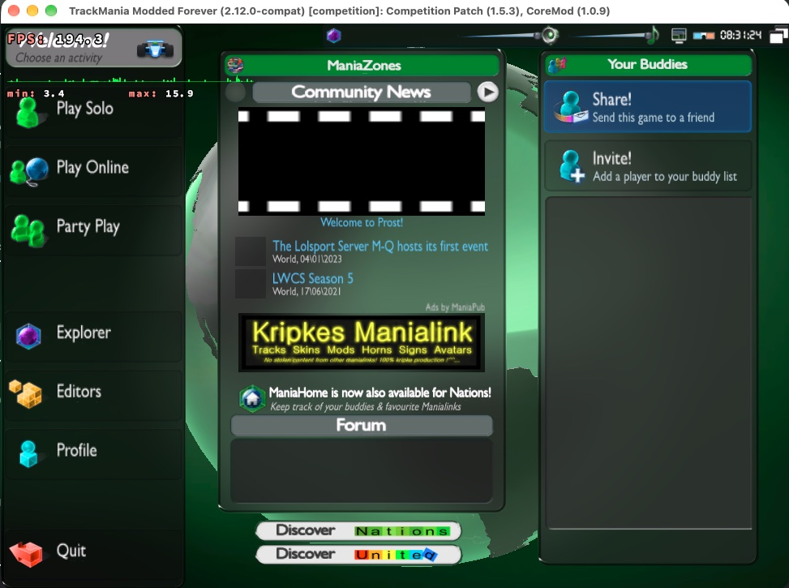
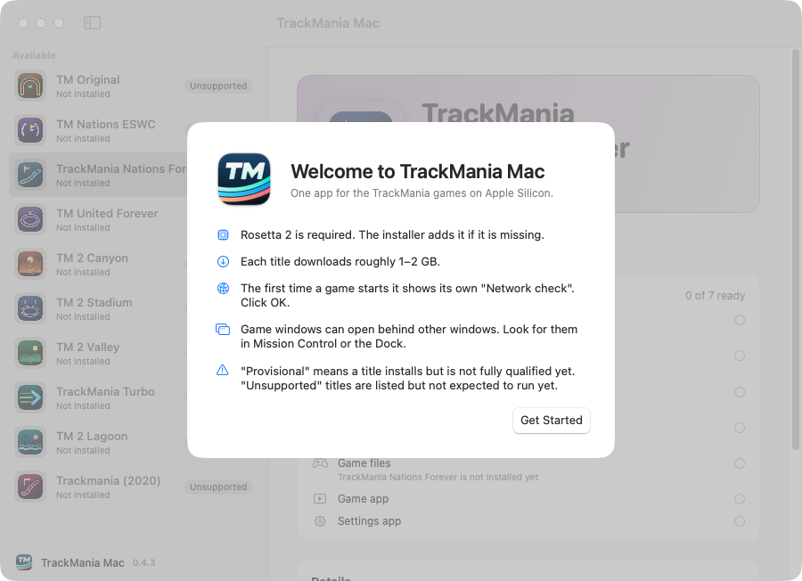

TrackMania Mac
TrackMania, on your Mac.
Play TrackMania Nations Forever on Apple Silicon. One free app installs the game and everything it needs.
Free and open source. No Windows or developer tools needed.

Get Started
From download to racing in four steps.
-
Download
Get TrackMania-Mac.app.zip from the latest release, unzip it and drag TrackMania Mac into Applications.
-
Open
If macOS says it can't verify the app, go to System Settings > Privacy & Security and click Open Anyway. Once is enough.
-
Install
Select Nations Forever, click Install or repair and choose Download prebuilt. It takes a few minutes.
-
Play
When the checklist is all green, click Play. The game also appears in Applications as TrackMania Nations Forever.
The first launch takes a moment, and the game window may open behind others. Click OK on its "Network check" dialog.
What You Get
Everything set up for you.
-
One Click Install
The hub downloads the game, a patched Wine runtime, DirectX and Competition Patch, then checks every piece.
-
Real Mac Apps
You get a TrackMania Nations Forever app to play and a TrackMania Settings app for graphics and audio.
-
Competition Patch Included
Starts with TMLoader, Competition Patch and CoreMod, so online play works the way the community plays today.
-
Exact Physics
An x87 translator keeps the game's 24-bit floating-point math intact under Rosetta, so runs behave like they do on Windows.
-
Fast Graphics
D9VK and MoltenVK turn Direct3D 9 into Metal, with a shader cache that carries over between launches.
-
Your Saves Stay Safe
Saves, replays and settings live in their own folder. Uninstalling a game keeps them.
Games
The TrackMania family.
-

SupportedNations Forever
Free download from Nadeo
-

ProvisionalUnited Forever
Official retail installer, needs your serial key
-

ProvisionalOriginal
Your own retail disc image or setup file
-
Provisional
TrackMania 2 Canyon
Official ManiaPlanet trial
-

ProvisionalTurbo
Your existing Steam game folder
Provisional titles install, but graphics, copy protection, online play and full gameplay are not fully tested yet.
Gallery
A closer look.
-

In GameNations Forever on an M1 Pro in a 1280x720 window, with the frame rate overlay on. -

Main MenuCompetition Patch and CoreMod load automatically. -

WelcomeThe hub explains what to expect before you start.
FAQ
Questions and answers.
Which Macs does it work on?
Any Mac with Apple Silicon (M1 or later) running macOS 14 Sonoma or later. Intel Macs are not supported. Rosetta 2 is required, and the installer adds it if it's missing.
Is it free?
Yes. The hub is free and open source, and Nations Forever is a free game. Nothing here is paid.
Do I need Windows or developer tools?
No. The hub carries everything it needs and runs the Windows game through a patched build of Wine.
macOS won't open the app.
Open System Settings > Privacy & Security, scroll down and click Open Anyway next to TrackMania Mac. You only have to do this once.
I clicked Play but no window appears.
The first start takes a while, and the window can open behind others. Check Mission Control or click the game in the Dock.
How do I change resolution or graphics?
Close the game, open TrackMania Settings (in Applications or from the hub), make your changes, save and close it, then play again.
Where are my saves and replays?
In ~/Games/TMNF/UserData/TmForever. They are kept when you uninstall the game.
How do I uninstall?
In the hub, select the game, click the ⋯ button and choose Uninstall. Your saves, downloaded installers and the runtime stay.
Something went wrong. Where do I get help?
In the hub, click ⋯ > Open Logs Folder, then open an issue and attach the newest log.
Is this official?
No. It's an independent community project, not affiliated with Nadeo or Ubisoft. Games and DirectX are downloaded from their original hosts or supplied by you.
Ready to race?
TrackMania Mac runs on macOS 14 and later on Apple Silicon.
Download Latest Release Free and open source